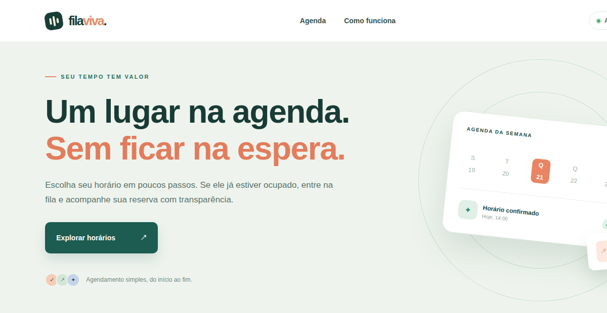

FILA VIVA / CAPTURA DO PROJETO01 / PLATAFORMA WEB
Fila Viva
Plataforma de agendamentos com lista de espera. Quando um horário está ocupado, a próxima pessoa entra na fila e pode ser promovida após um cancelamento.
Explorar no GitHub React
React Angular
Angular TypeScript
TypeScript JavaScript
JavaScript Java
Java Spring Boot
Spring Boot Node.js
Node.js PostgreSQL
PostgreSQL MySQL
MySQL MongoDB
MongoDB Docker
Docker Git
Git GitLab
GitLab Kubernetes
Kubernetes AWS
AWS